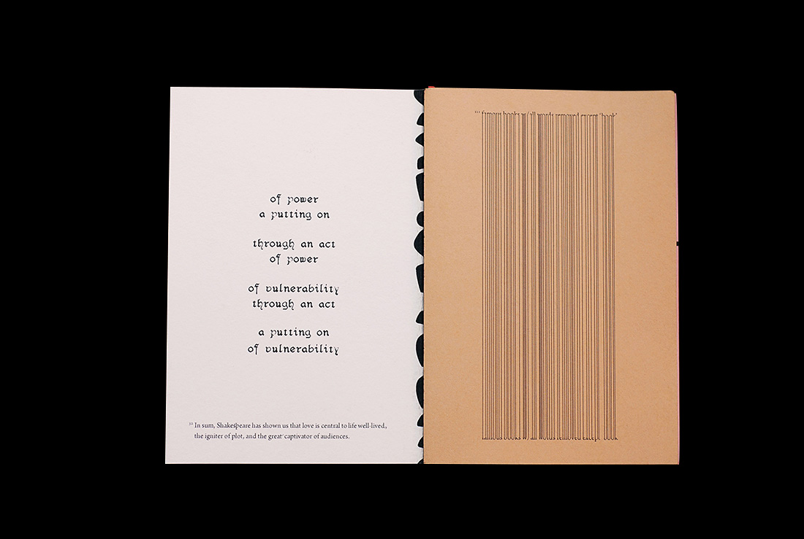
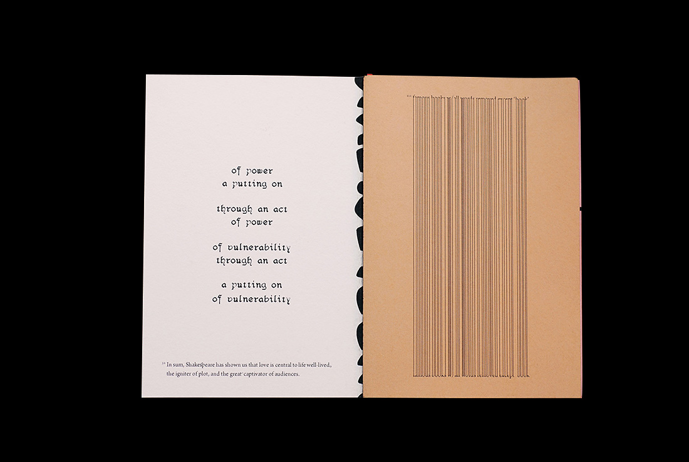

This zine is a Dada-inspired experiment in design without concept. It features rejected projects, brainstorms, writing, and just plain bad ideas from my first year at RISD. I set up restrictions for the process (design linearly, make no revisions, include all the content I preselected, only use black) then printed the finished pages sans pagination onto randomized sheets. The binding allows the spreads to be taken apart and viewed as they were designed.
Honored by
Adobe Design Achievement Awards, Print Communications Semifinalist, 2013
 
